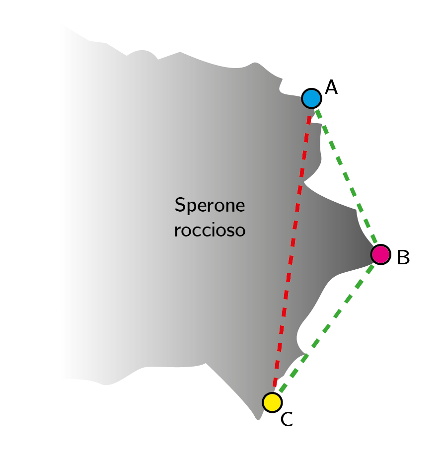

Studio e sviluppo di un protocollo di comunicazione per servizi non verbali per dispositivi "wearable"
Development of a communication protocol for wearable devices for non verbal communication
Abstract
The aim of the project, which was developed during the internship at Fondazione Bruno Kessler (Trento), is to develop a network of wearable devices in support of basic communication between climbers.
Someone before me had started to work on the project, achieving a one-one communication (like walkie-talkies). The main objective of my work was to overcome the limitations of standard radios, by developing a protocol
able to achieve message relaying between devices.
Such modifications to the existing software triggered a phase of re-design of the hardware and of human-machine interaction.
The importance of communication in climbing
Communication has a fundamental importance in many activities. Verbal communication is considered the easiest and fastest, but this isn't always true.
The biggest difficulties involve the distance, the presence of physical obstacles
or of some particular noisy events between speakers.
A real life example of these problems can be observed in climbing. In this sport, communication plays a key role in coordinating belaying operations between climbers.
Existing solutions
A common approach for nonverbal communication between climbers is the use of rope tugs. Unfortunately, this system introduces a significant amount of ambiguity.
Radios can be used too, but they have some drawbacks like
weight and costs. More over, they couldn't be able to cover long distances or to deliver a good transmission clarity if there's a huge rock obstacle between the communicating devices.
Speaking about smartphones (and smartwatches), the main problem is that many climbing environments don't have adequate telephone or internet/4G coverage.
If you want to know more about communication in climbing, I suggest you read this article.
Environmental issues
One of the main problems with radios is the impossibility to communicate between A and C because of the rock obstacle. The developed protocol enables the communication between them by using a third device (B) as an intermediate hop in the network.
Ad hoc protocol - Main features
The protocol, which guarantees message relaying, is based upon a sequence number controlled flooding mechanism. The picture shows the flow diagram of the algorithm used for retransmissions.
Every node of the network keeps a counter (sequence) that is incremented at each message sent. Every node also keeps a data structure in which it saves the pair <source_ID, sequence_number>, where the sequence number is the
last one received from that particular source. When a devices receives a message, checks if the destination ID is equal to its own ID, than checks for the sequence number to be newer that the last from the source device and
decides if the message needs to be displayed, retransmitted in broadcast (after a random time of maximum 500ms), or dropped.
More details can be found in the full PDF (written in Italian).
Project information
- Category: Networks and embedded programming
- Context: Bachelor's Degree in Computer Science
- Project date: March to June, 2019
- Full text: PDF (Italian)